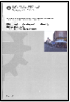

{kind=link}
Publications:
Please find below a list of my publications. You may also be interested in my preprints on arXiv, my Google Scholar Page and my Publons profile.
Lecture notes:
-
Multivariate Statistics and Machine Learning (MATH38161). 2018-2021.
181 pages (+ support material: worksheets, lecture videos). -
Statistical Methods: Likelihood, Bayes and Regression (MATH20802). 2019-2022.
197 pages (+ support material: worksheets, lecture videos).
Refereed publications:
-
Quantification of protein abundance and interaction defines a mechanism for operation of the circadian clock.
A. A. Koch and others. 2022. eLife 11: e73976.
(biorXiv:2021.08.27.456017) -
See whitening homepage for supporting R code.
A whitening approach to probabilistic canonical correlation analysis for omics data integration.
T. Jendoubi and K. Strimmer. 2019. BMC Bioinformatics 20: 15.
(arXiv:1802.03490) -
All methods implemented in whitening. Run optimal-whitening-table2.R to reproduce Table 2.
Optimal whitening and decorrelation.
A. Kessy, A. Lewin, and K. Strimmer. 2018.
The American Statistician 72: 309-314.
(arXiv:1512.00809) -
See also the MALDIquant homepage.
Mass spectrometry analysis using MALDIquant.
S. Gibb and K. Strimmer. 2016.
Chapter 6 (pp. 101-124) in: Datta, S., and Mertens, B. (eds). Statistical Analysis of Proteomics, Metabolomics, and Lipidomics Data Using Mass Spectrometry. Springer, New York.
(arXiv:1607.03180) -
This method is available in the binda R package.
Differential protein expression and peak selection in mass
spectrometry data by binary discriminant analysis.
S. Gibb and K. Strimmer. 2015.
Bioinformatics 31: 3156-3162.
(arXiv:1502.07959) -
A simple data-adaptive probabilistic variant calling model.
S. Hoffmann, P. F. Stadler, and K. Strimmer. 2015.
Algorithms for Molecular Biology 10: 10.
(arXiv:1405.5251) -
Signal identification for rare and weak features: higher criticism
or false discovery rates?
B. Klaus and K. Strimmer. 2013.
Biostatistics 14: 129-143.
(arXiv:1112.2615) -
See the accompanying R code to reproduce the complete analysis. A novel algorithm for simultaneous SNP selection in high-dimensional genome-wide association studies.
V. Zuber, A. P. Duarte Silva, and K. Strimmer. 2012.
BMC Bioinformatics 13: 284
(arXiv:1203.3082) -
See also the MALDIquant homepage.
MALDIquant: a versatile R package for the analysis of
mass spectrometry data.
S. Gibb and K. Strimmer. 2012.
Bioinformatics 28: 2270-2271.
(arXiv:1203.5885) -
Introduction to graphical modelling.
M. Scutari and K. Strimmer. 2011.
Chapter 11 in: M. P. H. Stumpf, D. J. Balding, and M. Girolami (eds.). Handbook of Statistical Systems Biology. Wiley, Chichester, UK, pp. 237-254.
(arXiv:1005.1036) -
Learning false discovery rates by fitting sigmoidal threshold functions.
B. Klaus and K. Strimmer. 2011.
Journal de la Société Française de Statistique 152: 39-50.
(arXiv:1104.5414) -
This regression approach is available in the care R package.
High-dimensional regression and variable selection using CAR scores.
V. Zuber and K. Strimmer. 2011.
Statist. Appl. Genet. Mol. Biol. 10: 34.
(arXiv:1007.5516, original bepress version) -
See the MALDIquant R package.
Analysis of proteomic data using MALDIquant.
S. Gibb and K. Strimmer. 2011.
Proceedings of the 8th International Workshop on Computational Systems Biology, WCSB 2011 (June 6-8, 2011, Zurich, Switzerland), pp. 49-52. -
Over-optimism in bioinformatics: an illustration.
M. Jelizarow, V. Guillemot, A. Tenenhaus, K. Strimmer, and A.-L. Boulesteix. 2010.
Bioinformatics 26: 1990-1998. -
Thresholding methods for feature selection in genomics: higher criticism versus
false non-discovery rates.
B. Klaus and K. Strimmer. 2010.
Proceedings of the 7th International Workshop on Computational Systems Biology, WCSB 2010 (June 16-18, 2010, Luxembourg, Luxembourg), pp. 59-62. -
See the sda R package.
Feature selection in omics prediction problems using cat scores and false non-discovery rate control.
M. Ahdesmäki and K. Strimmer. 2010.
Ann. Appl. Stat. 4: 503-519.
(arXiv:0903.2003) -
The cat score is implemented in the sda and st R packages.
Gene ranking and biomarker discovery under correlation.
V. Zuber and K. Strimmer. 2009.
Bioinformatics 25: 2700-2707.
(arXiv:0902.0751) -
This method is implemented in the entropy R package.
Entropy inference and the James-Stein estimator, with application
to nonlinear gene association networks.
J. Hausser and K. Strimmer. 2009.
J. Mach. Learn. Res. 10: 1469-1484.
(arXiv:0811.3579) -
A general modular framework for gene set enrichment analysis.
M. Ackermann and K. Strimmer. 2009.
BMC Bioinformatics 10: 47. -
Comparison of the Gaussian process classification approach with classical
penalized classification methods in high-dimensional omics data.
M. Ahdesmäki and K. Strimmer. 2009.
Proceedings of the 6th International Workshop on Computational Systems Biology, WCSB 2009 (June 10-12, 2009, Aarhus, Denmark), pp. 19-22. -
Correlation-adjusted t-scores in application to functional magnetic resonance imaging data.
V. Zuber and K. Strimmer. 2009.
Proceedings of the 6th International Workshop on Computational Systems Biology, WCSB 2009 (June 10-12, 2009, Aarhus, Denmark), pp. 163-166. - Genetic distances and nucleotide
substitution models: Theory.
K. Strimmer and A. von Haeseler. 2009.
Chapter 4 in: P. Lemey, M. Salemi, A.M. Vandamme (eds.). The Phylogenetic Handbook 2nd edition. Cambridge University Press, Cambridge, UK, pp. 111-125.
(typographic corrections) -
A unified approach to false discovery rate estimation.
K. Strimmer. 2008.
BMC Bioinformatics 9: 303.
(typographic corrections) -
Visit the fdrtool homepage.
fdrtool: a versatile R package
for estimating local and tail area- based false discovery rates.
K. Strimmer. 2008.
Bioinformatics 24: 1461-1462. -
Connections between the augmented bootstrap
and the shrinkage covariance estimator. Comment on: Augmenting the bootstrap
to analyze high- dimensional data.
K. Strimmer. 2008.
TEST 17: 25-27. -

Download the WCSB 2008 proceedings. Proceedings of the 5th International Workshop on Computational Systems Biology, WCSB 2008, June 11-13, 2008, Leipzig, Germany.
M. Ahdesmäki, K. Strimmer, N. Radde, J. Rahnenführer, K. Klemm, H. Lähdesmäki, and O. Yli-Harja (eds). 2008. 201 pages. -
Therapeutic vaccination reduces HIV sequence variability.
D. Hoffmann, J. Seebach, A. Cosma, F. D. Goebel, K. Strimmer, H. M. Schätzl, and V. Erfle. 2008.
FASEB J. 22:437-444. -
This method is available in the GeneNet R package. From correlation to causation networks: a simple approximate learning algorithm and its application to high-dimensional plant gene expression data.
R. Opgen-Rhein and K. Strimmer. 2007.
BMC Syst. Biol. 1: 37. -
Learning causal networks from systems biology time course
data: an effective model selection procedure for the
vector autoregressive process.
R. Opgen-Rhein and K. Strimmer. 2007.
BMC Bioinformatics 8 Suppl. 2: S3. -
The "shrinkage t" statistic is implemented in the st R package.
Accurate ranking of differentially
expressed genes by a distribution- free shrinkage
approach.
R. Opgen-Rhein and K. Strimmer. 2007.
Statist. Appl. Genet. Mol. Biol. 6: 9.
(original bepress version, typographic corrections) -
The PLS analyzes were conducted using the R package
plsgenomics.
Partial least squares: a versatile tool for the analysis of
high- dimensional genomic data.
A.-L. Boulesteix and K. Strimmer. 2007.
Briefings in Bioinformatics. 8: 32-44. -
Inferring gene dependency networks from genomic longitudinal data:
a functional data approach.
R. Opgen-Rhein and K. Strimmer. 2006.
REVSTAT 4:53-65. -
Using regularized dynamic correlation to infer gene dependency
networks from time-series microarray data.
R. Opgen-Rhein and K. Strimmer. 2006.
Proceedings of the 4th International Workshop on Computational Systems Biology, WCSB 2006 (June 12-13, 2006, Tampere, Finland), pp. 73-76. -
Reverse engineering genetic networks using the GeneNet package.
J. Schäfer, R. Opgen-Rhein, and K. Strimmer. 2006.
R News 6/5:50-53. - Book review of
"Statistical Methods in Bioinformatics: An Introduction",
2nd edition, Springer 2005, by W. J. Ewens and G. R. Grant.
K. Strimmer. 2006.
Biometr. J. 48:178-179. -
See the corpcor R package
for efficient estimation of large-scale covariance matrices and their inverses.
A shrinkage approach to large-scale covariance matrix
estimation and implications for functional genomics.
J. Schäfer and K. Strimmer. 2005.
Statist. Appl. Genet. Mol. Biol. 4: 32.
(original bepress version) -
Predicting transcription factor activities from combined analysis
of microarray and ChIP data: a partial least squares approach.
A.-L. Boulesteix and K. Strimmer. 2005.
Theor. Biol. Med. Model. 2: 23. -
See the GeneNet R package.
An empirical Bayes approach to inferring large-scale gene association
networks.
J. Schäfer and K. Strimmer. 2005.
Bioinformatics 21: 754-764. -
For rjMCMC inferences from DNA sequences
use the ape software.
Inference of demographic history from genealogical trees using reversible
jump Markov chain Monte Carlo.
R. Opgen-Rhein, L. Fahrmeir, and K. Strimmer. 2005.
BMC Evol. Biol. 5: 6. -
This paper reviews procedures for GGM network inference.
Learning
large-scale graphical Gaussian models from genomic data.
J. Schäfer and K. Strimmer. 2005.
AIP Conf. Proc. 776: 263-276. -
APE: Analyses of phylogenetics and evolution in R language.
E. Paradis, J. Claude, and K. Strimmer. 2004.
Bioinformatics 20: 289-290. -
Periodicity testing is available
in the GeneCycle R package.
Identifying periodically expressed transcripts in microarray time series
data.
S. Wichert, K. Fokianos, and K. Strimmer. 2004.
Bioinformatics 20: 5-20.
Corrigendum. 2008. Bioinformatics 24: 2274. - A brief introduction to the phylogenetic analysis
library, version 1.5.
M. Goode, K. Strimmer, A. Drummond, E. Buckler, and A. Rodrigo. 2004.
Pp. 175-179 in: Y.-P. Phoebe Chen (Ed.). CRPIT Volume 29: Proceedings of the Second Asia-Pacific Bioinformatics Conference (APBC2004), Dunedin, NZ, January 2004. - Inference
and applications of molecular phylogenies: an introductory guide.
K. Strimmer and D. L. Robertson. 2004.
Chapter 5 in: C. E. Sansom and R. M. Horton (eds.), The Internet for Molecular Biologists (Practical Approach Series). Oxford University Press, Oxford, UK. -
A CART-based approach to discover emerging patterns in microarray data.
A.-L. Boulesteix, G. Tutz, and K. Strimmer. 2003.
Bioinformatics 19: 2465-2472. - A novel exploratory method for visual recombination
detection.
K. Strimmer, K. Forslund, B. Holland, and V. Moulton. 2003.
Genome Biology 4: R33. - Modeling gene expression
measurement error: a quasi-likelihood approach.
K. Strimmer. 2003.
BMC Bioinformatics 4: 10. - Nucleotide
substitution models.
K. Strimmer and A. von Haeseler. 2003.
Chapter 4 in: M. Salemi, A.M. Vandamme (eds.). The Phylogenetic Handbook. Cambridge University Press, Cambridge, UK. - Phylogeny
inference based on maximum-likelihood methods with TREE-PUZZLE.
A. von Haeseler and K. Strimmer. 2003.
Chapter 6 in: M. Salemi, A.M. Vandamme (eds.). The Phylogenetic Handbook. Cambridge University Press, Cambridge, UK. - Comment on: Bayesian phylogenetic
inference from animal mitochondrial genome rearrangements.
K. Strimmer. 2002.
J. R. Statist. Soc. B 64: 745. - TREE-PUZZLE: Maximum likelihood phylogenetic analysis
using quartets and parallel computing.
H. A. Schmidt, K. Strimmer, M. Vingron, and A. von Haeseler. 2002.
Bioinformatics 18: 502-504. - Inferring
confidence sets of possibly misspecified gene trees.
K. Strimmer and A. Rambaut. 2002.
Proc. R. Soc. Lond. B 269: 137-142. -
The generalized skyline plot is implemented in ape.
Exploring the
demographic history of DNA sequences using the generalized skyline plot.
K. Strimmer and O. G. Pybus. 2001.
Mol. Biol. Evol. 18: 2298-2305. - PAL: An
object-oriented programming library for molecular evolution and
phylogenetics.
A. Drummond and K. Strimmer. 2001.
Bioinformatics 17: 662-663. -
Recombination analysis using directed graphical models.
K. Strimmer, C. Wiuf, and V. Moulton. 2001.
Mol. Biol. Evol. 18: 97-99. -
Dating the
common ancestor of SIVcpz and HIV-1 group M and the origin of HIV-1
subtypes using a new method to uncover clock-like molecular evolution.
M. Salemi, K. Strimmer, W. W. Hall, M. Duffy, E. Delaporte, S. Mboup, M. Peeters, and A.-M. Vandamme. 2001.
FASEB J. 15:276-278.
- Likelihood
analysis of phylogenetic networks using directed graphical models.
K. Strimmer and V. Moulton. 2000.
Mol. Biol. Evol. 17: 875-881. -
Likelihood mapping: a simple method to visualize phylogenetic content of a sequence
alignment.
K. Strimmer and A. von Haeseler. 1997.
Proc. Natl. Acad. Sci. USA 94: 6815-6819. -
Bayesian probabilities and quartet puzzling.
K. Strimmer, N. Goldman, and A. von Haeseler. 1997.
Mol. Biol. Evol. 14: 210-211. -
The TREE-PUZZLE program
implements "likelihood mapping" and "quartet puzzling" (among other things).
Quartet puzzling: a quartet maximum likelihood method for reconstructing
tree topologies.
K. Strimmer and A. von Haeseler. 1996.
Mol. Biol. Evol. 13: 964-969.
(publisher PDF is defective - instead use this scan) - Accuracy of
neighbor joining for n-taxon trees.
K. Strimmer and A. von Haeseler. 1996.
Sys. Biol. 45: 514-521.
Theses:
-
Maximum likelihood methods in
molecular phylogenetics.
K. Strimmer. 1997.
Doctoral Thesis. University of Munich. Herbert Utz Verlag. - Modell-Theorie der Dynamik der
Raum-Zeit auf der Basis unimodularer Drei-Metriken.
K. Strimmer. 1994.
Diploma Thesis. University of Munich.
Please note that all manuscript files are for private use only and may not be distributed without permission of the respective copyright owners.